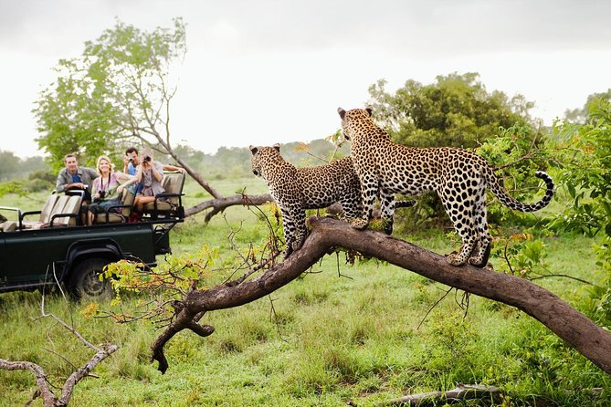
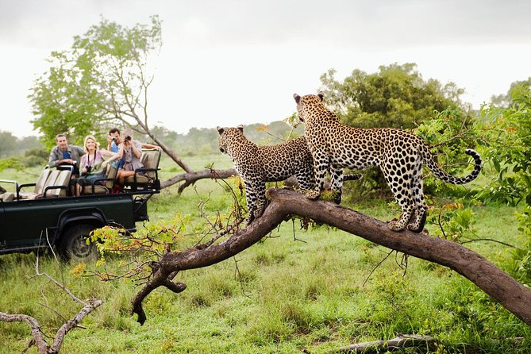

YALA NATIONAL PARK
ABOUT YALA
One of Sri Lanka's must-see locations is Yala National Park, also called Ruhuna National Park.
This outstanding game reserve, which is the most well-known in Sri Lanka, is situated in the southeast of the country for good reason. Yala is divided into five blocks and occupies an area of 1,260 square kilometres. It is believed to have the highest density of leopards per square kilometre in the world. The most popular area of the reserve is Block I, which also offers the best opportunities for a leopard safari.
Although leopards are usually difficult to spot, sightings in Yala are very good; you may see them lounging in the sun on rocky outcrops, in trees, across paths, and next to waterholes.
Sloth bears, Asian elephants, deer, monkeys, buffalo, and numerous bird species exist alongside with leopards. Yala provides the best chance to see leopards in Sri Lanka if that's your top priority.
HISTORY
Yala is one of the oldest national parks in Sri Lanka. It was first recognised as a wildlife sanctuary in 1900, but it wasn't until 1938 that it was made into a national park. The Buddhist temple Sithulpawa, located in the centre of Yala, was formerly a monastery and is believed to have been there for 2,000 years.
The monastery is believed to have supported 12,000 people at one point in time, and pilgrims from all over Sri Lanka still come to see it as a significant temple. Nearby are two other important cultural sites: Kataragama and Magul Maha Vihara.
GAME DRIVES
Yala National Park is an all year long wildlife safari destination. The best times to go are in early October, when the beginning of the drought and the regrowth of vegetation enhance the chances of seeing wildlife, and from May to September, when it is dry. Rainfall is brought in by the northeast monsoon from October/November through January, when the reserve becomes considerably more verdant.
The best time to see sloth bears is between May and July when they are in season and love to gorge on the delicious fruits of the Palu tree. Be ready to get up early because early morning and evening are the best times to see wildlife.
 
